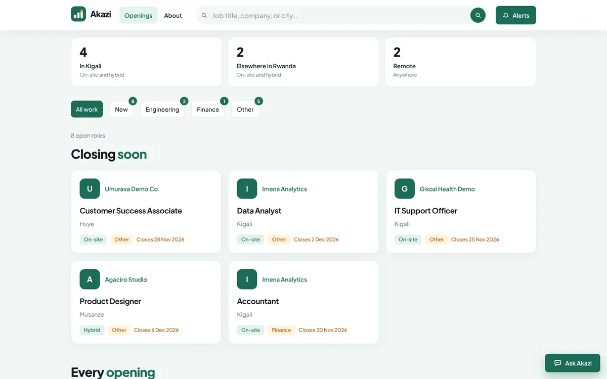
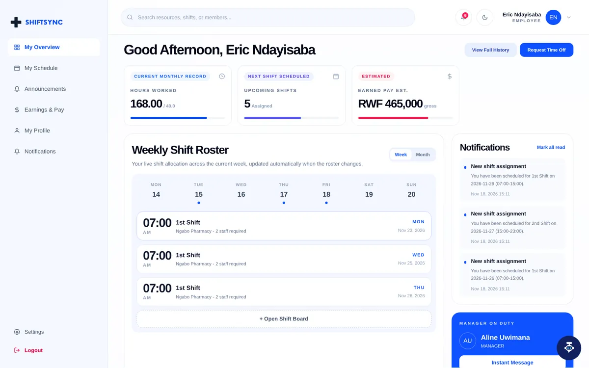
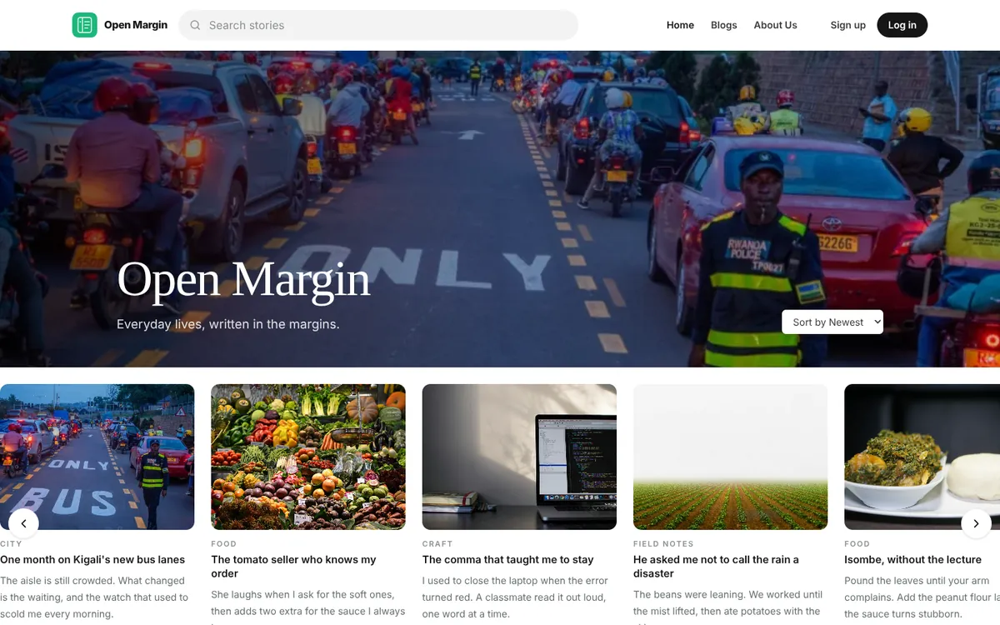

Case studies
From problem to practical implementation.
A closer look at selected projects, the needs they address and the engineering decisions behind them.

Next.jsTypeScriptSQLiteCrawling
Akazi
A job board that brings openings in Rwanda into one searchable place, then sends people to the employer’s own site to apply.
Challenge
Openings in Rwanda are spread across dozens of company career pages, each in its own format, so job seekers have to check many sites to find roles that fit.
Approach
Crawlers for common hiring platforms (Greenhouse, Lever, Workable, Ashby, Breezy) plus custom readers for local employers. Only roles in Rwanda or open to remote are kept, tagged by place and job function, and stored in SQLite through Drizzle ORM.
What it demonstrates
Collecting data from messy real-world sources, server-rendered Next.js, email alerts, an admin area, and running a live product.

Java 21Spring BootReact 19PostgreSQL
ShiftSync
A workforce platform for pharmacy and retail teams, with separate workspaces for administrators, managers and employees.
Challenge
Every shift needs the right mix of staff, and managers were tracking cover, pay and time-off requests by hand.
Approach
A Spring Boot REST API secured with JWT and role-based access, PostgreSQL through JPA, and a React 19 frontend. Auto-scheduling fills open roles, and the app adds payroll estimates, notifications and CSV/JSON exports.
What it demonstrates
Designing a multi-role system, securing an API, modelling a real domain (shifts, roles, pay) and building data-heavy dashboards.

ExpressTypeScriptMongoDBReact
Open Margin
A community blog where people read, write and share stories, with an AI assistant built into the editor.
Challenge
New writers often get stuck on titles, summaries and tags. An AI helper also needs limits so it can’t be abused or run up costs.
Approach
An Express and TypeScript API on MongoDB with accounts, posts, likes and comments, plus a React, Vite and Tailwind frontend. The AI service suggests titles, summaries and tags and improves paragraphs, with a daily limit per user and request timeouts. It deploys to Render as one service.
What it demonstrates
Full-stack JavaScript, adding an LLM to a product safely, API testing with Postman, and deployment.

HTML · CSS · JSi18nNetlify
Eagles Apartment
The website for a furnished-apartment business in Grande Barrière, Goma, overlooking Lake Kivu.
Challenge
Guests speak English, French or Swahili, and most of them book by WhatsApp or phone rather than through a booking platform.
Approach
A fast multi-page site in plain HTML, CSS and JavaScript with no build step. A small translation layer covers all three languages, photos are optimised WebP, and a booking form and WhatsApp button sit on every page. It is hosted on Netlify.
What it demonstrates
Working with a real client, performance-minded front-end work, internationalisation, and a site the owner can update from a single config.
Discuss the work
Have a project or opportunity in mind?
I’d be glad to explain the implementation and what I learned.